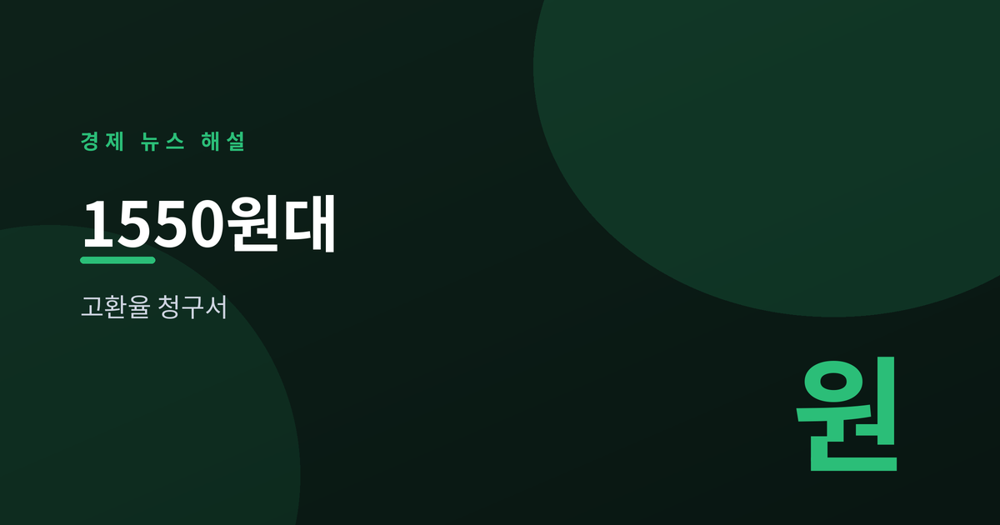
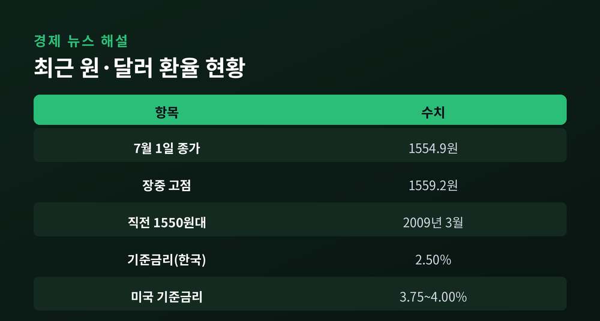
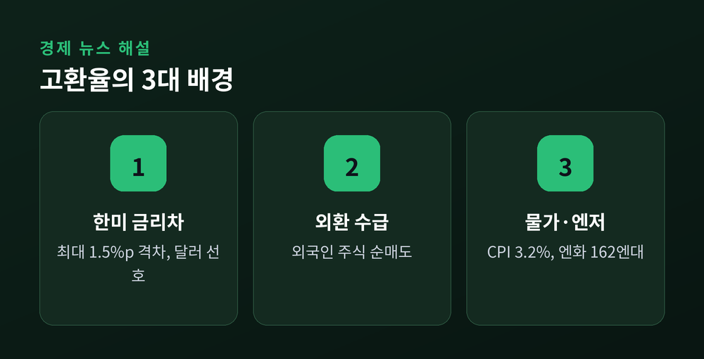
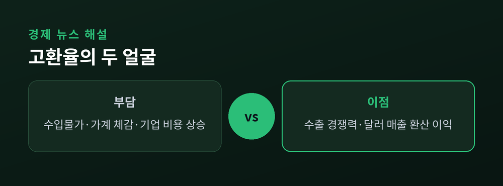
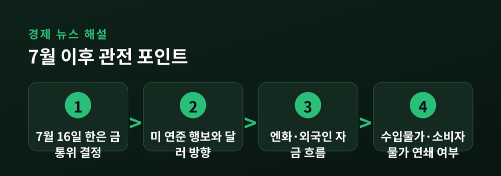

고환율의 배경과 청구서

2026년 7월 초, 원·달러 환율이 다시 세간의 화두가 됐다. 7월 1일 서울 외환시장에서 환율은 1554.9원으로 마감했고, 장중에는 1559원대까지 올랐다. 종가 기준 1550원대는 글로벌 금융위기 여진이 남아 있던 2009년 3월 이후 약 17년 만이라고 여러 매체가 전했다.
특정 하루의 튐이 아니라 흐름이 문제다. 환율은 봄을 지나며 1500원 선을 넘었고, 여름 들어 1550원 아래로 좀처럼 내려오지 못하는 모습이다. 시장에서는 "일시적 급등"보다 "고환율 고착"이라는 표현이 늘고 있다. 숫자 하나가 아니라 방향성이 굳어지고 있다는 우려다.

환율 상승의 배경은 크게 세 갈래로 읽힌다.
첫째, 한미 금리차다. 미국 기준금리는 연 3.75~4.00% 수준인 반면 한국은 2.50%로, 격차가 최대 1.5%포인트에 이른다. 금리가 높은 쪽으로 돈이 쏠리는 것은 자연스러운 흐름이고, 이는 원화보다 달러를 선호하게 만든다.
둘째, 외환 수급이다. 한국은행은 고환율의 원인으로 외국인의 국내 주식 순매도와 달러 강세를 지목해 왔다. 보도에 따르면 올해 상반기 외국인 주식 자금은 상당 규모가 순유출된 것으로 집계됐다. 흥미로운 점은 수출이 부진해서가 아니라는 것이다. 6월 수출은 월간 기준 처음으로 1000억 달러를 넘었고 상반기 무역수지도 큰 폭 흑자였다. 그럼에도 원화가 약한 것은 무역보다 자본시장 수급의 힘이 크다는 뜻으로 풀이된다.
셋째, 물가와 대외 변수다. 6월 소비자물가는 1년 전보다 3.2% 올라 2년 6개월 만에 가장 높았다. 석유류가 24.7% 급등하며 상승을 주도했다. 여기에 엔화가 달러당 162엔대까지 밀리는 '슈퍼 엔저'가 겹치며 아시아 통화 전반에 약세 압력을 더했다.

고환율의 청구서는 여러 곳으로 날아간다. 먼저 수입물가다. 원유·원자재·부품을 달러로 사 오는 구조에서 환율이 오르면 수입 단가가 뛴다. 이는 시차를 두고 소비자물가를 다시 밀어 올릴 수 있다. 물가가 환율을 자극하고 환율이 다시 물가를 자극하는 악순환의 고리가 우려되는 이유다.
기업 비용도 부담이다. 원자재 수입 비중이 큰 업종은 마진이 눌린다. 달러 부채가 많은 기업은 상환 부담이 커진다. 가계 역시 자유롭지 않다. 기름값·먹거리·해외여행 비용이 오르며 체감 물가가 높아진다.
반대편도 봐야 균형이 맞는다. 원화가 싸지면 수출 기업의 가격 경쟁력은 개선되고, 같은 달러 매출도 원화로 환산하면 더 커진다. 실제로 상반기 수출과 무역흑자는 견조했다. 다만 이 이익이 특정 대기업·수출업종에 집중되는 반면, 물가 부담은 전 국민에게 퍼진다는 점에서 체감의 온도차가 크다.

시선은 7월 16일 한국은행 금융통화위원회로 쏠린다. 현재 기준금리는 2.50%다. 시장 일각에서는 환율·물가 압력을 감안해 금리 인상 가능성을 점치는 관측이 나온다. 만약 인상이 현실화하면 2023년 초 이후 오랜만의 인상이 된다. 다만 금리를 올리면 경기와 가계부채에 부담이 되는 만큼, 동결 후 신중한 신호를 택할 가능성도 배제하기 어렵다.

환율의 방향은 국내 금리만으로 정해지지 않는다. 미 연준의 행보, 엔화 흐름, 외국인 자금의 귀환 여부가 함께 움직인다. 한 전문가는 금리차만으로 환율을 잡으려면 상당한 인상이 필요하며 결국 '기대'가 핵심이라고 지적했다. 당분간은 고환율 국면이 이어질 가능성에 무게가 실리되, 방향을 단정하기보다 7월 16일 회의와 대외 변수를 함께 지켜보는 편이 안전하다.
이 글은 정보 제공을 위한 것이며 투자 권유가 아닙니다.
참고 출처: 디지털타임스, 파이낸셜뉴스, 뉴스핌, 이투데이, 한국경제, 한국은행, KB(KB의 생각).